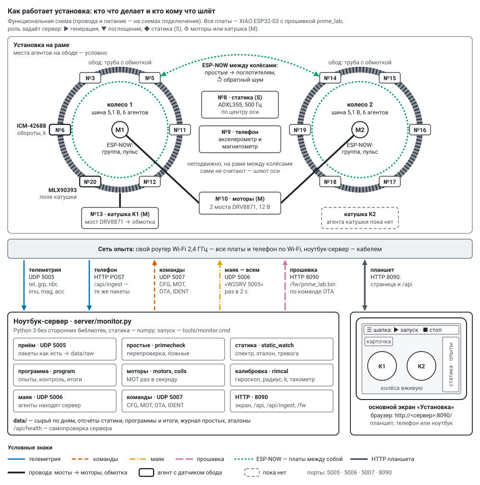
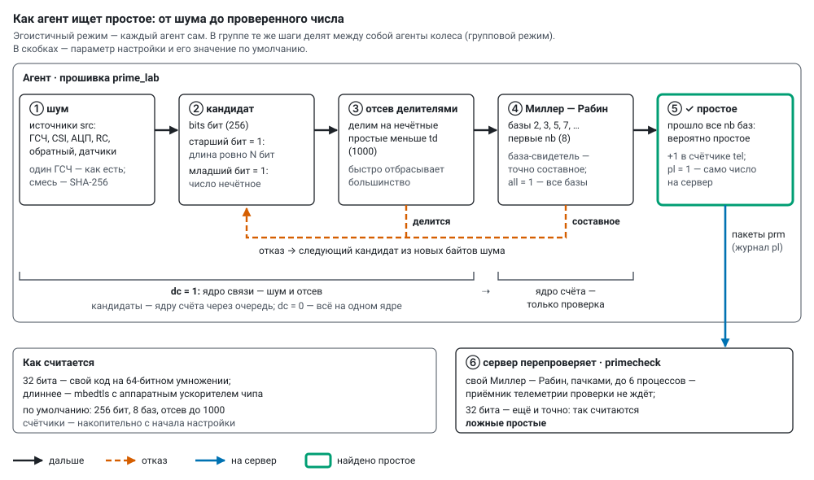
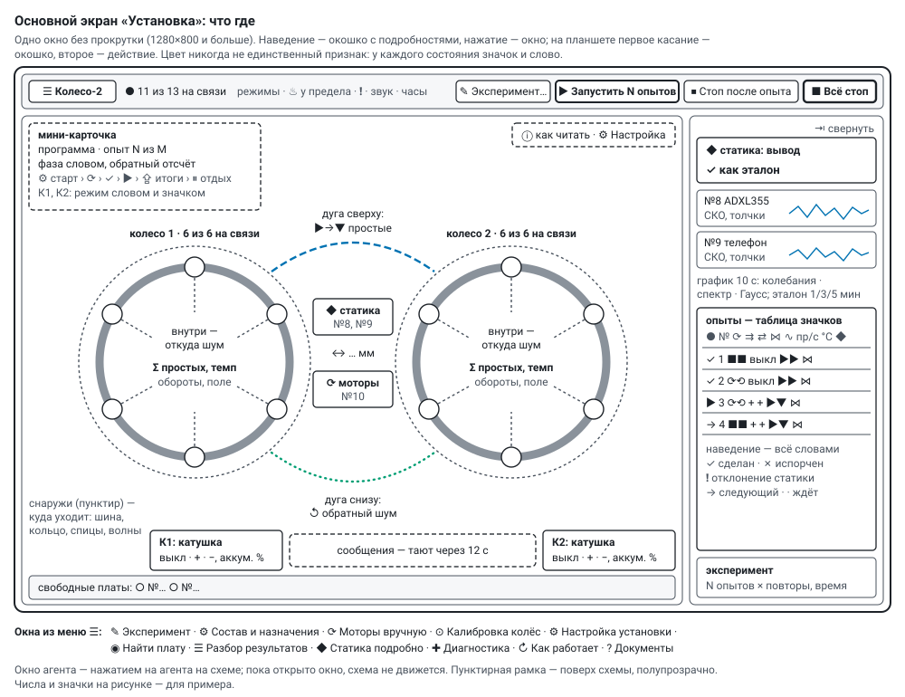

«Колесо-2»: как всё работает
Установка целиком: из чего состоит, что делает каждый агент, как устроены сервер и основной экран, какие есть параметры. По каждой теме — своя страница: схемы подключения, датчики, телефон, моторы, катушки, режимы, эксперимент и программа, статика, групповой режим, поглощение, шум, температура, смета, катушка на выносливость, поле тороида. Зачем установка — преамбула.
1. Установка#


- Колёса — два, друг напротив друга. Обод — труба с обмоткой катушки; на ободе по шесть агентов на шине 5,1 В от своих аккумуляторов. Колесо 1: №3, №5, №6 (датчик обода ICM-42688), №11, №12, №20 (магнитометр MLX90393); колесо 2: №14–№19.
- Катушка колеса — свои аккумуляторы, мост DRV8871 и агент катушки: поле «+», «−» или выкл. У колеса 1 это №13, у колеса 2 агента катушки пока нет. В группы колеса агент катушки не входит.
- Рама: моторы 36GP-555 на осях колёс, два моста DRV8871, блок 12 В и агент моторов №10.
- Статика — неподвижные датчики между колёсами: №8 (точный акселерометр ADXL355) по центру оси и телефон №9 — сам меряет и шлёт по Wi-Fi.
- Сеть опыта — свой роутер GL.iNet Mango (2,4 ГГц, канал 6): агенты и телефон — по Wi-Fi, ноутбук — кабелем; настройки — «Сеть опыта».
- Сервер —
server/monitor.pyна ноутбуке: принимает телеметрию, проверяет простые, считает статику, ведёт эксперименты, управляет моторами и катушками, пишет всё на диск. Python 3 без сторонних библиотек, для статики — numpy. Запуск —tools/monitor.cmd. - Основной экран «Установка» —
http://<сервер>:8090/в браузере планшета, телефона или ноутбука (§ 9). - Реестр —
registry/devices.csv: номер, MAC и метка каждой платы.
Провода и питание — схемы подключения, детали и цены — смета.
Агент — плата Seeed XIAO ESP32-S3 с прошивкой firmware/prime_lab. Роль задаёт сервер:
| роль | что делает |
|---|---|
| ▶ генерация (A) | ищет простые числа из физического шума — сам или в группе |
| ▼ поглощение (B) | получает простые генераторов другого колеса и рассеивает их в эфир, смешав со своим шумом |
| ◆ статика (S) | только меряет ускорение (500 Гц) и шлёт оси; всё считает сервер |
| ⚙ моторы / катушка (M) | крутит колёса через мосты или включает поле катушки по командам сервера |
Порты: 5005 — телеметрия (UDP), 5006 — маяк сервера (UDP), 5007 — команды (UDP), 8090 — HTTP (экран, /api, приём от телефона /api/ingest, образ прошивки /fw/prime_lab.bin).
На сервере та же картина — живая схема (меню «↻ Как работает»): кто на связи, темп простых, молчащая ветка — пунктиром.
2. Жизнь агента#
- Включение. Заставка светодиодом: 5 быстрых вспышек, последние 4 знака MAC азбукой Морзе, 5 быстрых, номер платы из реестра, 5 медленных.
- Wi-Fi. Сеть из
secrets/wifi.ini, только 802.11b/g — так CSI приходит на каждый пакет; сон радио выключен — шум приёмника идёт в генератор непрерывно. Есть запасная сеть (ssid2/password2): основная 40 с не пускает — плата уходит на запасную и через 2 мин, потом раз в 10 мин, когда стоит, пробует основную; в телеметрииnet(0 — основная, 1 — запасная). - Поиск сервера. Сервер раз в 2 с рассылает всем маяк
W2SRV 5005на UDP 5006 — агент сам находит его адрес. - Самопроверка. Миллер — Рабин на известных простых и «обманщиках» (до 2048 бит).
- Ожидание. После включения агент стоит: не считает, раз в секунду шлёт телеметрию.
- Работа. По команде сервера считает; светодиод вспыхивает на каждом пакете телеметрии.
- Остановка. Счёт встаёт, счётчики замирают — сервер забирает итоги.
- Прошивка по Wi-Fi (§ 13): образ — в свободный раздел, проверка MD5, перезапуск; новая прошивка пробная, пока агент не пробудет минуту на связи; не вышел за 10 минут или вылетел — загрузчик возвращает прежнюю.
Перезагрузился агент — сервер сам вернёт ему последние настройки.
3. Откуда берётся случайность#
| шум | что это | быстрота |
|---|---|---|
| ⚄ ГСЧ чипа | аппаратный генератор ESP32-S3 (esp_random), в него подмешан шум приёмника Wi-Fi | ~45 тыс. слов/с — основной |
| Σ все доступные | ГСЧ + CSI с пульса + АЦП + дрожание через SHA-256 | как самый медленный |
| ≋ CSI с пульса | «отпечаток» радиоканала в кадрах пульса соседей (ESP-NOW) | медленно |
| ↯ CSI с пинга роутера | то же по ответам роутера на пинг | медленно, осторожно (§ 8) |
| ⏚ АЦП D0 | свободная ножка D0: наводки и шум резисторов, ¼ бита на отсчёт | медленно |
| ⧖ дрожание RC | внутренний RC 136 кГц против кварца 40 МГц, ¼ бита на отсчёт | медленно |
| ↺ обратный шум | кадры поглотителей — петля через эфир (подмешать или только он) | сколько рассеют |
| ↕ акселерометр, 🧲 магнитометр | младшие байты осей датчиков обода — только он или добавкой | очень медленно |
- Один ГСЧ — его слова идут в число как есть. Любой другой набор — блоки SHA-256 по 256 бит, в каждый каждый отмеченный источник кладёт не меньше 256 засчитанных бит: число случайно, даже если хорош только один источник.
- Без хеша (
raw): младшие биты сырья прямо в число — видна физика источника; с выравниванием фон Неймана — снят перекос 0 и 1. - К ножке D0 ничего не подключать — с неё берётся шум АЦП. Подробно — шум.
4. Как ищется простое#


- Миллер — Рабин с базой a либо доказывает, что число составное (a — «свидетель»), либо говорит «вероятно простое»; чем больше баз, тем меньше шанс ошибки. По умолчанию 256 бит, 8 баз, отсев делителями до 1000.
- Два ядра (
dc= 1) — конвейер через очередь: ядро связи набирает шум и отсеивает, ядро счёта только проверяет; быстрее, но греет сильнее. - Сервер перепроверяет присланные простые своим Миллером — Рабином (журнал простых,
pl); 32-битные — ещё и точно, так считаются ложные простые. Темп — § 14.
5. Групповой режим#
Агенты колеса считают вместе по ESP-NOW (адресные кадры, 24 Мбит/с, радио подтверждает каждый кадр). Состав группы и адреса участников присылает сервер вместе с настройкой — новый агент входит в группу без перепрошивки остальных. Три варианта (gv), подробно — групповой режим:
- каскад (
gv2) — основной: числа складываются из кусочков шума всех, проверяют все сразу, каждый свои; найденное простое сверяет следующий; чужие кусочки ждут не дольшеpwмс, недостающие — своим шумом. Шестеро на двух ядрах — ~100–118 простых/с. - эстафета (
gv1) — число из шума всех, проверяет один, ход по кругу; темп одной-полутора плат при любом размере, почти не занимает эфир. - одно число на всех (
gv0) — каждое число проверяют все, базы поделены по кругу, нашедший свидетеля — следующий мастер; медленно, но ответы обязаны совпадать — проверка целостности (согласие).
Когерентность — доля кругов, собранных из кусочков всех, и серии без сбоев. Молчащий участник (не прислал кусочки после трёх просьб) группу не задерживает; любой кадр от него — его снова ждут.
6. Поглощение#
Генератор, найдя простое, объявляет его в эфир одним кадром; поглотители другого колеса его слышат и рассеивают — смешивают со своим шумом и выпускают обратно: все со всеми (каждый — всё число), россыпь (каждый — свой кусок), эстафета, тишина. Пустышка — тот же трафик без числа (контроль), фон — свой шум с заданной частотой. Обратный шум — генераторы берут в шум кадры поглотителей: петля через эфир. Подробно — поглощение.
7. Вращение, поле и калибровка колёс#
- Моторы (меню «⟳ Моторы вручную…» или опыт программы): колёса по отдельности, вместе, навстречу или крутится одно; режим — стоит, ШИМ, обороты или невесомость: обороты, при которых наверху k = ω²r/g = 1 (при r = 450 мм — 44,6 об/мин). В «оборотах» и «невесомости» — ПИ по оборотам с датчика обода. Сервер раз в секунду шлёт агенту моторов
MOT; команды перестали приходить — агент сам плавно останавливает моторы. - Поле катушки — выкл, «+» или «−»: кнопками на схеме или опытом программы; агенту катушки уходит та же команда
MOT, нет команд 5 с — мост выключается. Магнитометр колеса показывает, есть ли поле и куда оно: на схеме «✓» — датчик видит то, что задано, «◐» — другое. - Калибровка колёс (меню «⊙ Калибровка колёс…»). Масштаб гироскопа датчика обода подстраивается сам — по фазе тяжести на ровных оборотах. Радиус датчика и смещение нуля его акселерометра — по наклону ускорения от ω² на нескольких скоростях (разброс оборотов не меньше ±15 %); радиус по наклону для невесомости включается галочкой. Оптический тахометр на отражающую метку даёт точки сверки — поправка одним множителем, тоже галочкой. Радиус каждого агента меряется линейкой от оси до чипа и хранится в установке: у каждого агента своё k = ω²r/g — оно видно в окне агента и записывается в каждый опыт. Подробно — датчики.
8. Температура и сторожа#
- Регулятор раз в секунду подбирает долю работы ядра счёта (5–100 %), чтобы кристалл держался на градус ниже предела (по умолчанию 73 °C, выше 75 нельзя). Доля минимальна, а кристалл 20 с выше предела на 3 °C — радио засыпает между маяками; выше на 8 °C три секунды — авария: счёт стоит, пока не остынет на 3 °C ниже предела. Первые 12 с после перезапуска регулятор датчику не верит. Отдых, спринт, рейтинг агентов — температура.
- Сторож радио: кадры ESP-NOW уходят, а отчётов радио о них нет 15 с — или Wi-Fi нет 90 с — плата перезапускается сама; сервер вернёт ей настройку, группа примет обратно.
- Сторож Wi-Fi («зомби»): плата «подключена», а пакеты не уходят 10 с — переподключение (
wrst); или 45 с нет маяка сервера — переподключение; три подряд — перезапуск (rbt3). В телеметрииudpe,bcn,heapmin,cmd. - Пульс: каждый агент раз в секунду шлёт всем кадр ESP-NOW «я жив» (считает ли, °C); у каждого — таблица соседей (кого слышит, с каким сигналом), раз в 5 с — на сервер пакетом
nbr. - CSI брать с пульса (
hb5–20,ping0): частый пинг роутера переполняет буферы передачи и даёт «зомби»; пинг — только как отдельный шум, не выше 20/с и короткими опытами.
9. Основной экран «Установка»#


http://<сервер>:8090/ — одно окно без прокрутки (1280×800 и больше). Цвет никогда не единственный признак: у каждого состояния значок и слово (палитра Okabe — Ito), у источников шума — значок, штрих и место дорожки.
- Шапка: «☰ Колесо-2» — меню (окна ниже; внизу — вид: прозрачно / сплошь, движение как в системе / полное / спокойное / нет), связь («● 11 из 13 на связи»), значки режимов, которые меняют смысл нажатия («⚙ настройка», «◉ найти плату: ВКЛ»), «♨ у предела: №…», ❗ тревога статики, 🔔 звук, часы. Справа — «✎ Эксперимент…», «▶ Запустить N опытов · ≈ время» (или «↻ Продолжить №…»), во время программы «⏸ Пауза» / «▶ Продолжить», «⏹ Стоп после опыта» и всегда «■ Всё стоп» — сразу программа, счёт у всех, моторы и катушки.
- Мини-карточка (поверх схемы, слева сверху): программа, «опыт N из M», фаза словом и обратный отсчёт, полоска фаз (⚙ старт › ⟳ подготовка › ✓ проверка › ▶ исполнение › ⇪ итоги › ⏸ отдых), по строке на колесо — режим словом и значком и доли шума («вживую», «шаг» или «план»), обороты, поле, температуры.
- Схема — вживую по телеметрии. Внутри обода — откуда шум: от агентов внутрь идут дорожки источников, толщина — доля засчитанных бит, точки бегут с темпом; без датчика значок зачёркнут. В середине колеса — Σ простых и темп, обороты, поле катушки, |B|. Снаружи — куда уходит, по способу (таблица ниже). Агент: номер, значок дела, температура (дуга — от 40 °C до предела); вспышка и «+N» — найдены простые, «▼+N» — поглотитель принял. Обод при поле — синий со стрелками по ходу поля; пунктир снаружи бежит — колесо крутится. Дуга сверху — простые генераторов к поглотителям другого колеса, снизу — обратный шум. Между колёсами — статика, «↔ … мм» (нажать — задать расстояние), агент моторов; в нижних углах — агенты катушек, кнопки поля и аккумуляторы (INA219, остаток %); внизу — свободные платы.
- Окошки при наведении — на всё: агент, колесо, группа, дуги, аккумуляторы, фазы, датчики, опыты. Наведение на «К1», источник шума или способ подсвечивает своих агентов. На планшете первое касание — окошко, второе — действие. С клавиатуры: Tab по агентам, Enter — окно, Esc — закрыть. «Движение: нет» или «уменьшить движение» в системе — без анимации.
- Колонка справа (⇥ — свернуть в полоску): статика — вывод крупно (✓ как эталон · ⚠ проверить · ↻ помеха или прибор · ◌ нет эталона · ○ нет данных), датчики (статический, телефон) друг под другом, у каждого всегда три маленьких живых графика за 10 с — Гаусс, спектр, колебания — по выбранной оси, эталон и его запись 1 / 3 / 5 мин; опыты — таблица значков (● состояние, №, ⟳ вращение, ⇉ поле, ⇄ роли, ⋈ способ, ∿ шум, пр/с, °C, ◆ статика; наведение — всё словами); строка эксперимента.
- ❗ Тревога статики — вывод «⚠ проверить»: три сигнала, мигающее «❗» в шапке и строка в подвале внизу экрана — время, опыт, причина, «↻ повторить» и «подробно». Окна сами не открываются: каждое отклонение — строкой в списке, «подробно» — окно с причинами по нажатию — статика.
- ⓘ у важного — что это и зачем; «ⓘ как читать» над схемой — условные знаки схемы. Сообщения всплывают над схемой и тают через 12 с.
| способ | на схеме, снаружи обода |
|---|---|
| ● эгоистичный | у каждого агента своя замкнутая ячейка, снаружи пунктир «не связаны» |
| ⋈ каскад | двусторонняя шина, ✓ у проверяющего; простое точкой уходит соседу на проверку |
| ⇢ эстафета | кольцо со стрелками по номерам и палочка — темп кругов, показан медленнее |
| ① одно число на всех | спицы к общему числу в середине; согласие, % |
| ▼ поглощение | волны у поглотителя: целиком — сплошные, по кускам — пунктир, пустышка — точки, эстафетой — цепочка, «только слушают» — без волн |
Окна (меню «☰»; пока открыто окно, схема не движется):
| окно | что в нём |
|---|---|
| агент (нажать на агента) | дело, темп, шум по источникам, соседи, память; «∿ вживую» (колебания, Гаусс, спектр по осям, до 15 мин), «🧲 поле вживую», шум и точность датчика, радиус линейкой и k, место |
| ✎ Эксперимент… | что меняем и в каком порядке → список опытов, запуск (§ 10) |
| ⚙ Состав и назначения | все платы по местам: связь (сервер помнит, когда была последний раз), прошивка («⇪» — прошить по Wi-Fi), °C; ✎ переставить (смена роли — перезапуск ≈ 15 с), ⤓ снять, ◉ ×10 — мигнуть, ✓ проверить по роли, ✕ убрать (в реестре retired; вернуть — «↺»), ＋ добавить плату по USB (§ 13) |
| ⟳ Моторы вручную… | вращение вне эксперимента (§ 7) |
| ⊙ Калибровка колёс… | гироскоп по тяжести, радиус и смещение по наклону, тахометр, радиусы агентов линейкой (§ 7) |
| ⚙ Настройка установки | расставить платы: нажать плату, потом место; справа — шаги «с нуля до запуска», у каждого ✓ / ◐ / ✗ / ○ и кнопка |
| ◉ Найти плату | нажатие на агента — его светодиод мигает 20 с |
| ☰ Разбор результатов | что влияет при прочих равных, сводная, протокол опытов, CSV (§ 10) |
| ◆ Статика подробно | спектры против коридора эталона, события, запись эталона |
| ✚ Диагностика | каждое колесо считает каскадом из ГСЧ, потом таблица по агентам: связь, кого слышит, темп против медианы группы, температура, память, датчики, итог ✓ / ◐ / ✗ |
| ↻ Как работает | живая схема установки и протокол группы по шагам, замедленно |
| ? Документы | эта документация |
«✓ проверить» по роли: генератор считает сам 30 с; катушка — выкл → «+» → выкл → «−» по 4 с (ток по INA219, поле по магнитометру); моторы — каждое колесо 3 с на ШИМ 30 %; измеритель — 10 с отсчётов.
Для отладки — по адресам: /pult (пульт: логические группы и наборы, свои параметры агентов, «≋ Тушение»), /watch (статика и поток простых крупно), /old (прежняя панель: все счётчики, графики, сессии).
10. Эксперимент и программа#
Эксперимент — список опытов, пройденный «повторов» раз; опыт — один набор параметров. Подробно — эксперимент и программа, что значит каждый режим — режимы.
| параметр | значения |
|---|---|
| ⟳ вращение колёс | каждое колесо стоит, вперёд или назад — таблица 3 × 3 (⟳⟲ навстречу, ⟳⟳ вместе, ⟳■ крутится одно) |
| ⏲ скорость | обороты, ШИМ или невесомость; у стоящих колёс не перебирается |
| ± отступ от невесомости | ступени около расчётной невесомости: 0 и ± шаг, по желанию ± два шага; шаг — % оборотов, по умолчанию 3 (k меняется вдвое сильнее: +3 % — k ≈ 1,06); только при скорости «невесомость» |
| ⇉ поле катушек | каждая выкл / + / −, тоже 3 × 3 |
| ⇄ излучение / поглощение | каждое колесо стоит / генерирует / поглощает; ⏸⏸ — только статика (никто не считает, вращение и поле идут); ▼▼, ▼⏸, ⏸▼ нельзя |
| ⋈ совместная работа | эгоистичный, каскад, одно число на всех, эстафета |
| ▼ поглощение | кто чьё (все со всеми · пары 1:1 · все — одного · каждое — одному · половина колеса) и как (целиком · по кускам · эстафетой · пустышка · только слушают) |
| ∿ шум | источники; все вместе, без одного, по одному — все три дают 2N + 1 вариант |
Отступ от невесомости нужен, потому что система неточна: радиусы агентов на колесе разные, датчик обода и регулятор ошибаются — ступени ловят невесомость каждого агента.
- Окно «✎ Эксперимент…»: слева параметры, порядок карточек — вложенность циклов (верхняя меняется реже всех; вращение выше — меньше разгонов); справа сразу список опытов. «⚙ Сформировать список» превращает отметки в список, который правится руками (⧉ дублировать, ↑ ↓, ✕). Над списком — время, тепло самого горячего агента, хватит ли аккумуляторов; ниже — длительность опыта (30 с: установление + измерение), установление (вращение 15 с, роль / способ / шум 8 с, только поле 5 с), повторы и порядок, отдых, пауза между повторами. Когда программа плана идёт или прошла, в той же таблице — что вышло.
- Контроль — колёса стоят, поле выкл; каждый опыт с вращением или полем сравнивается со своим контролем — тем же режимом и шумом.
- Программа — список опытов по «▶ Запустить»: эталон шума перед началом, повторы, отдых, сравнение опыта с контролем по заранее названному критерию, проверка аномалии парами, повтор испорченного опыта и опыта с отклонением статики.
- Пауза и продолжение: «⏸ Пауза» — после текущего опыта всё встаёт (катушки выкл, колёса стоят, агенты остывают), «▶ Продолжить» — с того же места. Сама программа встаёт на паузу, когда сели аккумуляторы (INA219) или агенты опыта молчат дольше 30 с. Испорченный опыт повторяется; остановленную или прерванную программу можно продолжить с первого невыполненного опыта — итоги в ту же запись.
- Результаты («☰ Разбор результатов»): что влияет — каждый параметр при прочих равных, Δ ± ошибка и вывод ✓ не отличается / ◐ возможно (2–3 σ) / ❗ отличие (больше 3 σ); сводная любых двух параметров; протокол опытов; CSV.
- Расстояние между колёсами ставится руками («↔ … мм» на схеме); сервер хранит его в
data/rig.jsonи записывает в каждый опыт.
11. Параметры агентов#
Уходят агентам строкой CFG … на UDP 5007; агент подтверждает их номером настройки (cid) в телеметрии, пока не совпало — сервер повторяет раз в 2 с. Основной экран ставит их сам из опытов; вручную — на пульте и в прежней панели. Виды: общие (одинаковые в группе), свои у агента, на ходу (меняются без нового номера, счёт продолжается).
| параметр | что это | значения | по умолчанию | вид |
|---|---|---|---|---|
role | роль: 0 — генерация, 1 — поглощение, 2 — статика, 3 — моторы или катушка (агент запоминает роль и перезапускается) | 0–3 | 0 | свой |
mode | 0 — эгоистичный, 1 — групповой | 0, 1 | 0 | общий |
gv | вариант группы: 0 — одно число на всех, 1 — эстафета, 2 — каскад | 0, 1, 2 | 0 | общий |
rk | эстафета и каскад: простых за ход | 1–16 | 1 | общий |
pw | эстафета и каскад: ждать кусочки не дольше, мс; потом недостающие — своим шумом; 0 — ждать всех | 0–5000 | 0 | общий |
grp, gm | номера и MAC участников группы (сервер подставляет сам) | общий | ||
nr | скорость ESP-NOW: 1 — 24 Мбит/с, 2 — 6 Мбит/с, 0 — 1 Мбит/с (медленно, греет) | 0, 1, 2 | 1 | общий |
bits | длина простого | 32 … 2048 | 256 | общий |
nb | число баз Миллера — Рабина (первые из 2, 3, 5, 7, 11, 13, 17, 19, 23, 29, 31, 37) | 1–12 | 8 | общий |
all | 1 — каждого кандидата проверяют все базы; 0 — до первой «составное» | 0, 1 | 0 | общий |
td | отсев делителями меньше этого числа; 0 — без отсева | 0 … 20 000 | 1000 | общий |
k | одно число на всех: кандидатов за один сбор | 4–64 | 24 | общий |
pre | группа: кусочки шума набирать заранее (только при одном ГСЧ) | 0, 1 | 1 | общий |
dc | два ядра: ядро связи набирает шум и отсеивает, ядро счёта только проверяет | 0, 1 | 0 | общий |
tp | период телеметрии, мс | 500–5000 | 1000 | общий |
src | шум (маска): 1 — ГСЧ, 2 — CSI, 4 — АЦП, 8 — дрожание, 16 — обратный шум, 32 — акселерометр обода, 64 — магнитометр обода | 1–127 | 1 | свой |
raw | 0 — блоки SHA-256; 1 — без хеша; 2 — без хеша с фон Нейманом | 0, 1, 2 | 0 | свой |
cf | CSI: 0 — с любых кадров, 1 — только ответы роутера, 2 — только кадры поглотителей; 3 — опыт: пинг без CSI | 0–3 | 0 | общий |
ping | пингов роутера в секунду для CSI; 0 — без пинга | 0, 10–200 | 100 | свой |
hb | пульс: кадров «я жив» в секунду всем; соседям каждый такой кадр — замер CSI | 1–20 | 1 | на ходу |
tmax | предел температуры кристалла, °C | 40–75 | 73 | свой, на ходу |
txp | мощность передатчика, дБм | 2–20 | 20 | свой, на ходу |
cpu | частота процессора, МГц | 80, 160, 240 | 240 | свой |
led | вспышка светодиода на пакетах телеметрии | 0, 1 | 1 | на ходу |
sm | как поглотители рассеивают: 1 — все со всеми, 2 — россыпь, 3 — эстафета, 0 — тишина | 0–4 | 1 | общий |
ba | чьи простые поглощать: номера генераторов через запятую; пусто — всех | 1–63 | — | свой |
sh | пустышка: тот же трафик, вместо числа — шум | 0, 1 | 0 | общий |
bgr | фон поглотителей: кадров своего шума в секунду | 0–200 | 0 | общий |
sf | функция рассеяния у поглотителя: хеш, XOR, умножение, перестановка бит | 0–3 | 0 | свой |
bg, bm | номера и MAC поглотителей (сервер подставляет сам) | общий | ||
tl, tq | телеметрия: 0 — обычная, 1 — редкая, 2 — молчание; молчать tq с (0 — пока не отменят) | 0–2; 0–65535 | 0; 0 | свой, на ходу |
dur | шаг на агенте: через столько секунд агент сам останавливается и сдаёт итоги (done) | 0–7200 | 0 | на ходу |
ro | только с dur: Wi-Fi выкл на время шага, если эфир не нужен | 0, 1 | 0 | на ходу |
pl | журнал простых: каждое найденное простое — на сервер пакетами prm | 0, 1 | 0 | общий |
rmm | радиус датчика обода, мм | 50–2000 | 450 | свой, на ходу |
afs, avg | статике: предел ±g; среднее по стольким отсчётам 1000 Гц | 2–16; 1–8 | 2; 2 | свой, на ходу |
run | 1 — считать, 0 — стоять | 0, 1 | 0 |
Что обнуляет счётчики: новый номер настройки (сменилось что-то кроме параметров «на ходу»), старт или сброс. В группе номер один на всех. Остановка не обнуляет — итоги замирают.
Зашито в прошивке: регулятор температуры (4 % в секунду на градус); сроки протокола группы (вдвое дольше обычного + 20 мс, 3 повтора, перехват хода через 1,5 с); оценки шума (CSI — 32 бита на пакет, АЦП и дрожание — ¼ бита на отсчёт); Wi-Fi только b/g без сна радио; ножка АЦП D0; порты 5005–5007.
12. Телеметрия и данные#
- Агент раз в секунду шлёт
tel(≤1460 байт), в группе ещёgrp, раз в 5 с —nbr(соседи); статика —acc(отсчёты пачками), датчики обода —imu,mag; телефон шлёт те же пакеты строками вPOST /api/ingest. Счётчики накопительные с начала настройки: потеря пакета ничего не теряет. - Каждый пакет как есть пишется в
data/raw/<дата>.jsonl; при перезапуске сервер перечитывает хвост дня (последние два часа). Отсчёты статики —data/accel/<дата>/(int16 подряд + индекс). - Простые из журналов агентов перепроверяют процессы-помощники (
server/primecheck.py, до 6 по ядрам) пачками: приёмник проверки не ждёт. data/control.json— настройки и составы;data/programs/— программы с шагами и итогами;data/primes/<дата>/<mac>.txt— журнал простых;data/static/baselines/— эталоны статики;data/rig.json— расстояние между колёсами и радиусы агентов;data/fleet.json— когда каждая плата была на связи и с какой прошивкой;data/commands.jsonl— журнал команд./api/health— самопроверка сервера: живы ли задачи, давность пакета, очередь проверки, диск.
13. Новый агент и прошивка#
Новая плата прошивается по USB один раз — так в неё попадают prime_lab с прошивкой по Wi-Fi, данные сети и ключ подписи; дальше её обновляют по Wi-Fi вместе со всеми.
- Подключить плату кабелем с передачей данных к компьютеру с сервером.
- Меню «☰» → «⚙ Состав и назначения» → «＋ добавить плату»: плата видна как «★ новая», «⇪ прошить» (или двойной щелчок по
tools/new_board.cmd). - Плата записывается в реестр следующим номером и через ~40 с выходит на связь — в «свободных»; ✎ — поставить её на место.
Сервер узнаёт плату по серийному номеру USB (у ESP32-S3 это MAC). Плату не видно — зажать BOOT, переподключить кабель, отпустить. Вручную: tools/build.sh prime_lab COM<N>.
Обновить установленные платы — по Wi-Fi: собрать (tools/build.sh prime_lab) и «прошить всех на связи по Wi-Fi» (или python tools/ota.py all). Сервер отдаёт образ (/fw/prime_lab.bin) и шлёт команду OTA …, подписанную ключом secrets/ota.key (HMAC-SHA256, в git не попадает). Агент скачивает образ в свободный раздел, сверяет длину и MD5, перезапускается; не подтвердилась за 10 минут — откат к прежней.
14. Замеры#
Одна плата, 256 бит, если не сказано иначе.
| что | результат |
|---|---|
| ГСЧ | 2300 кандидатов/с, ~27 простых/с, 36 мс на простое |
| CSI / АЦП / дрожание | 12 / 18 / 15 кандидатов/с |
| 1024 / 2048 бит, ГСЧ | 185 / 30 кандидатов/с; проверка базой 25 / 181 мс |
| четыре платы, эгоистичный | 100–106 простых/с (по 25–27) |
| четыре платы, эгоистичный, два ядра | 179,6 простых/с (по 41–47); у предела 70 °C регулятор режет до ~155 |
| одно число на всех, 1 / 2 / 3 / 4 платы | 24,5 / 16,5 / 10,5 / 7,7 простых/с |
| эстафета, два ядра, 4 платы | 37,1 простых/с |
| каскад, два ядра: 4 / 6 плат | 80–92 / 118 простых/с |
| две группы сразу | друг другу не мешают |
Подробно — групповой режим, шум, температура.
15. Инструменты#
| файл | что делает |
|---|---|
tools/monitor.cmd | запустить сервер |
tools/build.sh <скетч> [порт] | сборка с версией из git, запись платы в реестр, прошивка |
tools/new_board.py, tools/new_board.cmd | первая прошивка новых плат по USB |
tools/ota.py [all \| номера] [--force] | прошить агентов по Wi-Fi и дождаться новой версии |
tools/build_docs.py [--static] | документация в HTML (docs/html/; сервер делает это сам при старте); --static — комплект для показа вне сети в build/site/ |
tools/publish.py [--push] | открытая копия на GitHub одним коммитом с проверкой на утечки |
tools/multi_test.py [секунд] [случаи] | прогон агентов по составам и режимам с проверкой счётчиков |
tools/anomaly_run.py, tools/anomaly_summary.py | прогоны по шагам с журналом простых — поиск аномалий; сводка |
tools/prime_stats.py [дата] | статистика журнала простых: проверка, повторы, остатки, биты, промежутки |
tools/nightly.py | ежевечерняя «зарядка»: короткие прогоны, сравнение с медианой прошлых вечеров, матрица «кто кого слышит» |
tools/soak.py, tools/sprint.py, tools/rest_ab.py | долгий прогон одной настройки; спринт; отдых по очереди «без» и «с» |
tools/coil_soak.py, tools/coil_soak_plot.py | катушка на выносливость и её график — катушка на выносливость |
tools/imu_noise.py <агент> [минут] | шум и точность акселерометра: СКО, гистограмма с гауссом, спектр, Аллан |
tools/sim_gen.py, tools/sim_agents.py | имитация агентов-генераторов и агентов с датчиками — проверить экран без плат |
tools/test_analysis.py, tools/test_static_watch.py | проверка расчётов колеса и статики на синтетике |
docs/calc/toroid_field.html, tools/toroid/ | расчёт поля тороида (поле тороида); проверка ядра node tools/toroid/test.js: идеальный тор b = 1 до 2·10⁻⁵, волна плотности ±10 % → 7,8 % на оси, как в теории |
tools/demo_capture.py | снимок данных тестового сервера для демонстрации основного экрана в опубликованной копии |
tools/runs_from_raw.py [дата] | восстановить журнал опытов за день из сырья |
tools/serial_capture.py, tools/count_boards.ps1, tools/register.py | журнал платы по USB; какие платы видит Windows; запись в реестр |
tools/video.py | ролики: кадры, расшифровка речи, озвучка, субтитры ru/en |
firmware/entropy_probe + tools/probe_report.py | замер источников шума |
Без плат: python server/monitor.py --http 8092 --udp 5016 --data data/test/gen --no-beacon и python tools/sim_gen.py 6 --port 5016, затем http://localhost:8092/.
16. Ограничения и что дальше#
- В группе каждое число проверяют несколько агентов — «одно число на всех» медленнее эгоистичного; каскад до шести агентов почти равен эгоистичному, но упирается в тепло и общий эфир (эфир один на все колёса).
- Проверка базой через mbedtls (~1 мс на 256 бит) — узкое место конвейера на двух ядрах; потолок задаёт ГСЧ: 45 000 слов/с — 5600 кандидатов по 256 бит в секунду, достигнуто 4100.
- Датчики температуры разных плат расходятся на несколько градусов.
- Впереди: агент катушки колеса 2, «одинаковые числа у всех» и поглощение «один к одному» в прошивке, CSI со всего эфира; счётчик Гейгера, камера и микрофон как внешние источники.